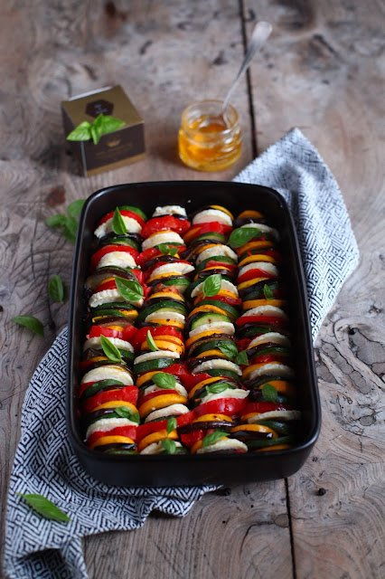

Tian de légumes
Ingredients
4×
- 3 courgettes
- 2 aubergines
- 4 tomates
- 2 mozzarellas
- 1 gousse d'ail
- huile d'olive
- basilic
- thym

Préparation
Étape 1
Couper en rondelles de 5mm 3 courgettes, 2 aubergines, 4 tomates et 2 mozzarellas.
Étape 2
Frotter un plat avec 1 gousse d'ail coupée en deux et verser un filet d’huile d'olive.
Étape 3
Alterner courgettes, aubergines et tomates en intercalant le fromage.
Étape 4
Parsemer de basilic et thym, arroser d’huile, saler, poivrer. Cuire 50min à 180ºC.